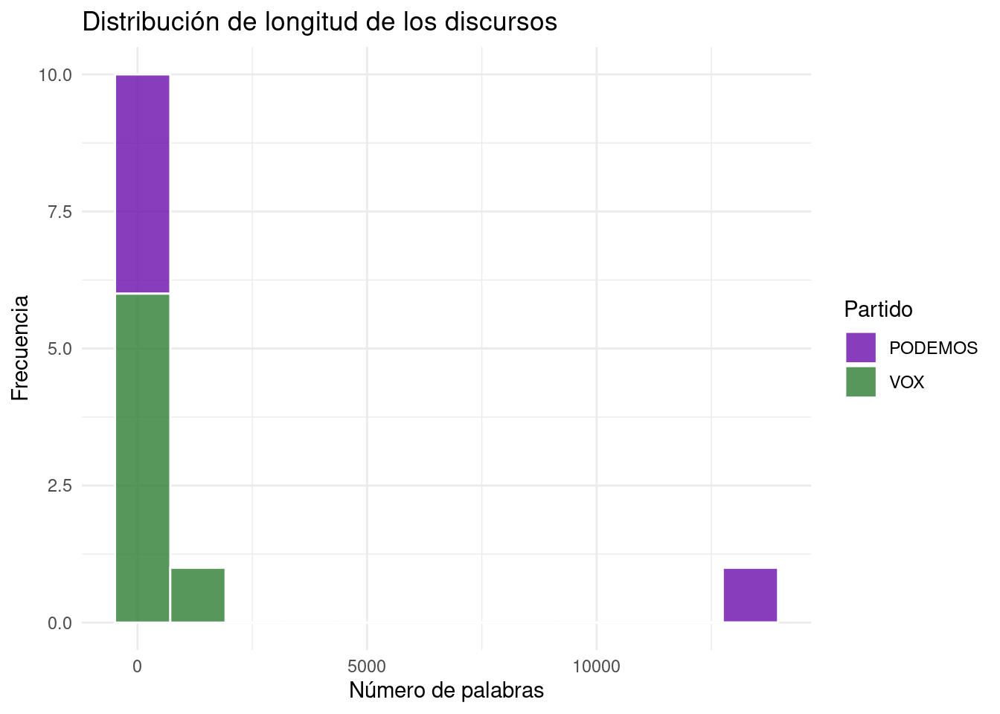
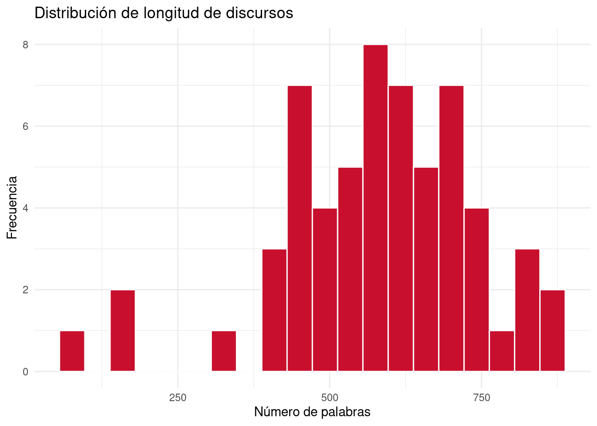
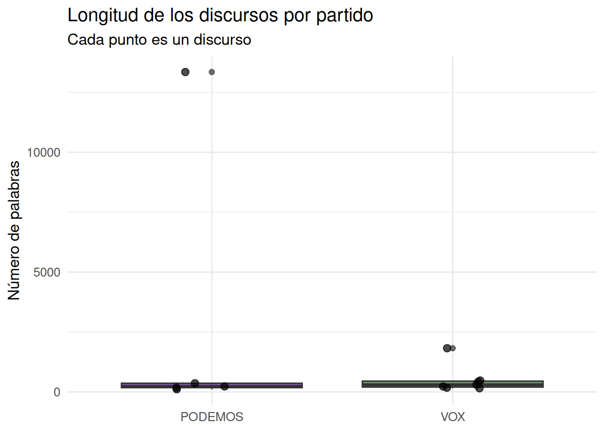
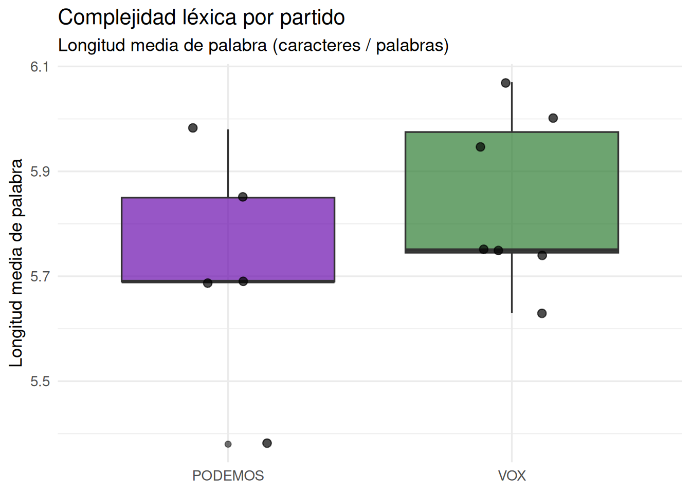
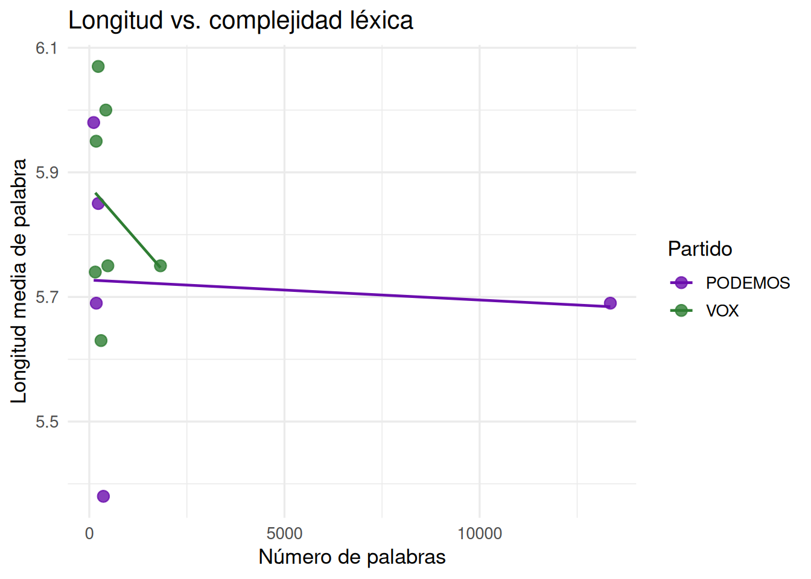
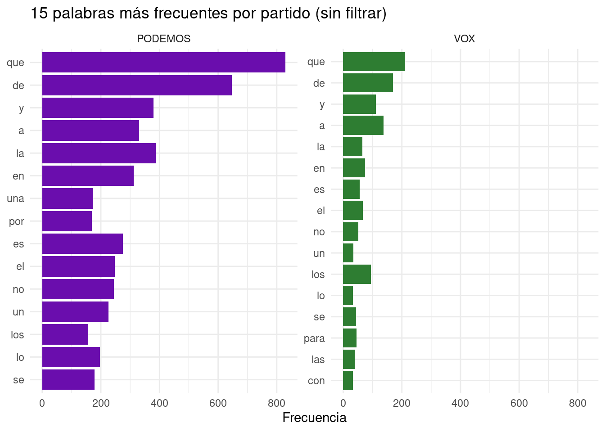
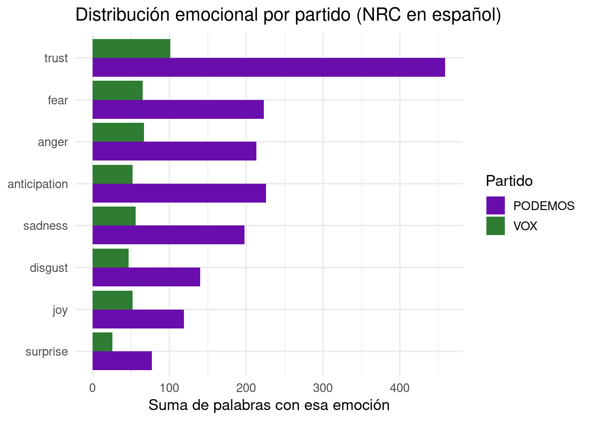
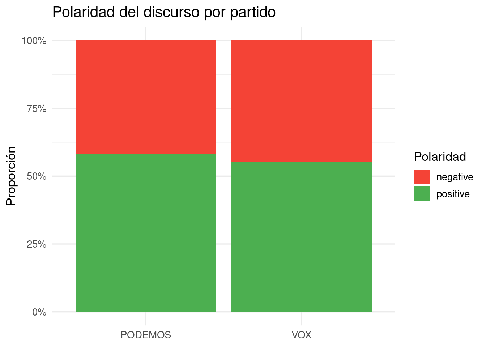

# Verificar versión de R — debería ser 4.0 o superior
R.version.string
# Instalar los paquetes que usaremos en el curso
paquetes <- c("tidyverse", "tidytext", "syuzhet", "ggplot2")
for (pkg in paquetes) {
if (!requireNamespace(pkg, quietly = TRUE)) {
install.packages(pkg)
}
cat("instalado:", pkg, "\n")
}
cat("\nTodo listo. Ya puedes empezar el curso.\n")Antes de empezar: instalación del entorno
Para seguir este curso necesitas tres herramientas instaladas en tu ordenador. Instálalas en este orden.
Paso 1 — Instalar R obligatorio
Descarga el instalador .exe desde la web oficial de CRAN y ejecútalo con las opciones por defecto:
👉 https://cran.r-project.org/bin/windows/base/
Paso 2 — Instalar RStudio Desktop obligatorio
RStudio es el entorno desde el que escribirás y ejecutarás tu código. Descarga la versión gratuita Open Source Edition:
👉 https://posit.co/download/rstudio-desktop/
⚠️ Instala RStudio después de R. RStudio detecta automáticamente la instalación de R al arrancar.
Paso 3 — Instalar Quarto opcional
Solo necesario si quieres generar documentos o presentaciones reproducibles (como esta misma página):
Paso 1 — Instalar R obligatorio
Descarga el paquete .pkg desde CRAN. Elige la versión según tu chip:
- Apple Silicon (M1 / M2 / M3): descarga el archivo con
arm64en el nombre - Intel: descarga el archivo con
x86_64en el nombre
👉 https://cran.r-project.org/bin/macosx/
Paso 2 — Instalar RStudio Desktop obligatorio
Descarga el .dmg, ábrelo y arrastra RStudio a la carpeta Aplicaciones:
👉 https://posit.co/download/rstudio-desktop/
💡 Si macOS bloquea el instalador de R, ve a Ajustes del sistema → Privacidad y seguridad y haz clic en “Abrir igualmente”.
Paso 3 — Instalar Quarto opcional
Solo necesario si quieres generar documentos o presentaciones reproducibles (como esta misma página):
Verificar que todo funciona
Una vez instalado R y RStudio, abre RStudio y copia esto en la consola (panel inferior izquierdo). Pulsa Enter:
Si ves los mensajes instalado: ... sin errores en rojo, tu entorno está correctamente configurado.
Parte I: Fundamentos de R y del entorno de trabajo
Qué es R
R es un lenguaje de programación estadístico diseñado específicamente para el análisis de datos, la estadística y la visualización. A diferencia de Excel, R es reproducible, extensible y gratuito. Los análisis se expresan como código: eso significa que cualquier colega puede replicar exactamente lo que has hecho.
En lingüística, R se usa para análisis de corpus, estadística de frecuencias, modelado de variación lingüística y visualización de patrones en el lenguaje.
R y RStudio
Son dos cosas distintas pero complementarias:
- R es el motor: el lenguaje que interpreta y ejecuta el código.
- RStudio es el entorno: la interfaz que facilita trabajar con R.
La analogía habitual es que R es el motor del coche y RStudio es el salpicadero.
El entorno de trabajo en RStudio
RStudio se organiza en cuatro paneles:
| Panel | Ubicación | Para qué sirve |
|---|---|---|
| Script | Arriba izquierda | Escribir y guardar el código |
| Console | Abajo izquierda | Ver resultados y ejecutar líneas sueltas |
| Environment | Arriba derecha | Ver los objetos creados en la sesión |
| Files / Plots / Packages | Abajo derecha | Gestionar archivos y ver gráficos |
R como calculadora
2 + 3[1] 510 / 4[1] 2.52 ^ 8[1] 256sqrt(144)[1] 12sum(1, 2, 3, 4, 5)[1] 15mean(c(1, 2, 3, 4, 5))[1] 3Asignación de objetos
mi_nombre <- "Ana García"
edad <- 23
aprobado <- TRUE
mi_nombre[1] "Ana García"edad + 10[1] 33Tipos de datos fundamentales
x <- 3.14
class(x)[1] "numeric"palabra <- "lingüística"
class(palabra)[1] "character"es_sustantivo <- TRUE
class(es_sustantivo)[1] "logical"Ejercicio 1
- Calcula cuántas palabras habría en un texto de 5 páginas si cada página tiene 250 palabras.
- Crea un objeto llamado
autorcon tu nombre completo entre comillas. - Crea un objeto
anyo_naccon tu año de nacimiento y calcula tu edad:2025 - anyo_nac. - Usa
class()sobre cada objeto. ¿Qué tipo de dato devuelve cada uno?
Parte II: Estructuras de datos y manipulación básica
Vectores
longitudes <- c(3, 5, 2, 8, 4, 6, 3, 7)
mean(longitudes)[1] 4.75median(longitudes)[1] 4.5max(longitudes)[1] 8length(longitudes)[1] 8palabras <- c("casa", "árbol", "luz", "universidad")
nchar(palabras)[1] 4 5 3 11Data frames
corpus_ejemplo <- data.frame(
palabra = c("casa", "árbol", "correr", "azul"),
categoria = c("sustantivo", "sustantivo", "verbo", "adjetivo"),
silabas = c(2, 2, 3, 2),
frecuencia = c(8420, 3105, 5622, 4890)
)
corpus_ejemplo palabra categoria silabas frecuencia
1 casa sustantivo 2 8420
2 árbol sustantivo 2 3105
3 correr verbo 3 5622
4 azul adjetivo 2 4890Exploración inicial
str(corpus_ejemplo)'data.frame': 4 obs. of 4 variables:
$ palabra : chr "casa" "árbol" "correr" "azul"
$ categoria : chr "sustantivo" "sustantivo" "verbo" "adjetivo"
$ silabas : num 2 2 3 2
$ frecuencia: num 8420 3105 5622 4890summary(corpus_ejemplo) palabra categoria silabas frecuencia
Length:4 Length:4 Min. :2.00 Min. :3105
Class :character Class :character 1st Qu.:2.00 1st Qu.:4444
Mode :character Mode :character Median :2.00 Median :5256
Mean :2.25 Mean :5509
3rd Qu.:2.25 3rd Qu.:6322
Max. :3.00 Max. :8420 nrow(corpus_ejemplo)[1] 4ncol(corpus_ejemplo)[1] 4Acceso y selección de variables
corpus_ejemplo$palabra[1] "casa" "árbol" "correr" "azul" corpus_ejemplo$frecuencia[1] 8420 3105 5622 4890corpus_ejemplo[1, ] palabra categoria silabas frecuencia
1 casa sustantivo 2 8420corpus_ejemplo[, 2][1] "sustantivo" "sustantivo" "verbo" "adjetivo" corpus_ejemplo[2, 3][1] 2Filtrado de observaciones
corpus_ejemplo[corpus_ejemplo$silabas == 2, ] palabra categoria silabas frecuencia
1 casa sustantivo 2 8420
2 árbol sustantivo 2 3105
4 azul adjetivo 2 4890corpus_ejemplo[corpus_ejemplo$frecuencia > 5000, ] palabra categoria silabas frecuencia
1 casa sustantivo 2 8420
3 correr verbo 3 5622corpus_ejemplo[corpus_ejemplo$categoria == "sustantivo", ] palabra categoria silabas frecuencia
1 casa sustantivo 2 8420
2 árbol sustantivo 2 3105Ejercicio 2
Crea un data frame llamado mi_corpus con al menos 5 palabras de tu elección y las columnas palabra, categoria y longitud.
- Usa
str(mi_corpus)para inspeccionar la estructura. ¿Qué tipo tiene cada columna? - Accede a la columna de longitud con
$y calcula la media. - Filtra solo las palabras con más de 5 caracteres.
- Reto: ¿Cuántas palabras son sustantivos en tu corpus?
Carga del corpus real
A partir de aquí trabajamos con un corpus real de transcripciones de discursos políticos sobre inmigración en España. Los textos están alojados en GitHub. El código es completamente reproducible.
library(dplyr)
Attaching package: 'dplyr'The following objects are masked from 'package:stats':
filter, lagThe following objects are masked from 'package:base':
intersect, setdiff, setequal, unionlibrary(readr)
library(stringr)
library(purrr)
library(ggplot2)
base_url <- "https://raw.githubusercontent.com/AritzUMA/runav/main/discursos/"
archivos <- c(
"VOX_1.txt", "VOX_2.txt", "VOX_3.txt", "VOX_4.txt",
"VOX_5.txt", "VOX_6.txt", "VOX_7.txt",
"PODEMOS_1.txt", "PODEMOS_2.txt", "PODEMOS_3.txt",
"PODEMOS_4.txt", "PODEMOS_5.txt"
)
leer_discurso <- function(archivo) {
url <- paste0(base_url, archivo)
texto <- read_lines(url) |> paste(collapse = " ")
partido <- str_extract(archivo, "^[A-Z]+")
id <- str_remove(archivo, "\\.txt$")
tibble(
id = id,
partido = partido,
texto = texto,
n_palabras = str_count(texto, "\\S+"),
n_chars = nchar(texto),
long_media_palabra = round(nchar(texto) / str_count(texto, "\\S+"), 2)
)
}
corpus <- map(archivos, leer_discurso) |> list_rbind()
glimpse(corpus)Rows: 12
Columns: 6
$ id <chr> "VOX_1", "VOX_2", "VOX_3", "VOX_4", "VOX_5", "VOX_6…
$ partido <chr> "VOX", "VOX", "VOX", "VOX", "VOX", "VOX", "VOX", "P…
$ texto <chr> "Este lado está con nosotros, Rosío Bonasterio, ana…
$ n_palabras <int> 1823, 228, 176, 423, 475, 153, 300, 13350, 112, 179…
$ n_chars <int> 10474, 1383, 1047, 2540, 2733, 878, 1690, 75955, 67…
$ long_media_palabra <dbl> 5.75, 6.07, 5.95, 6.00, 5.75, 5.74, 5.63, 5.69, 5.9…Parte III: Análisis de datos y visualización básica
Instalación y carga de paquetes
install.packages(c("dplyr", "ggplot2", "readr", "stringr", "purrr", "tidytext", "syuzhet"))Exploración inicial del corpus
corpus |> select(id, partido, n_palabras, n_chars, long_media_palabra)# A tibble: 12 × 5
id partido n_palabras n_chars long_media_palabra
<chr> <chr> <int> <int> <dbl>
1 VOX_1 VOX 1823 10474 5.75
2 VOX_2 VOX 228 1383 6.07
3 VOX_3 VOX 176 1047 5.95
4 VOX_4 VOX 423 2540 6
5 VOX_5 VOX 475 2733 5.75
6 VOX_6 VOX 153 878 5.74
7 VOX_7 VOX 300 1690 5.63
8 PODEMOS_1 PODEMOS 13350 75955 5.69
9 PODEMOS_2 PODEMOS 112 670 5.98
10 PODEMOS_3 PODEMOS 179 1019 5.69
11 PODEMOS_4 PODEMOS 361 1943 5.38
12 PODEMOS_5 PODEMOS 229 1340 5.85summary(corpus |> select(n_palabras, n_chars, long_media_palabra)) n_palabras n_chars long_media_palabra
Min. : 112.0 Min. : 670 Min. :5.380
1st Qu.: 178.2 1st Qu.: 1040 1st Qu.:5.690
Median : 264.5 Median : 1536 Median :5.750
Mean : 1484.1 Mean : 8473 Mean :5.790
3rd Qu.: 436.0 3rd Qu.: 2588 3rd Qu.:5.957
Max. :13350.0 Max. :75955 Max. :6.070 Manipulación con dplyr
corpus |> select(id, partido, n_palabras)# A tibble: 12 × 3
id partido n_palabras
<chr> <chr> <int>
1 VOX_1 VOX 1823
2 VOX_2 VOX 228
3 VOX_3 VOX 176
4 VOX_4 VOX 423
5 VOX_5 VOX 475
6 VOX_6 VOX 153
7 VOX_7 VOX 300
8 PODEMOS_1 PODEMOS 13350
9 PODEMOS_2 PODEMOS 112
10 PODEMOS_3 PODEMOS 179
11 PODEMOS_4 PODEMOS 361
12 PODEMOS_5 PODEMOS 229corpus |> filter(partido == "VOX")# A tibble: 7 × 6
id partido texto n_palabras n_chars long_media_palabra
<chr> <chr> <chr> <int> <int> <dbl>
1 VOX_1 VOX Este lado está con nosotr… 1823 10474 5.75
2 VOX_2 VOX Perdón, esos extranjeros … 228 1383 6.07
3 VOX_3 VOX Estos más de 300 inmigran… 176 1047 5.95
4 VOX_4 VOX Señor Sánchez, ¿qué piens… 423 2540 6
5 VOX_5 VOX Señor Sánchez, ¿por qué s… 475 2733 5.75
6 VOX_6 VOX Lo que les ha ocurrido aq… 153 878 5.74
7 VOX_7 VOX ser que han cambiado uste… 300 1690 5.63corpus |>
mutate(n_palabras_k = round(n_palabras / 1000, 2)) |>
select(id, partido, n_palabras, n_palabras_k)# A tibble: 12 × 4
id partido n_palabras n_palabras_k
<chr> <chr> <int> <dbl>
1 VOX_1 VOX 1823 1.82
2 VOX_2 VOX 228 0.23
3 VOX_3 VOX 176 0.18
4 VOX_4 VOX 423 0.42
5 VOX_5 VOX 475 0.48
6 VOX_6 VOX 153 0.15
7 VOX_7 VOX 300 0.3
8 PODEMOS_1 PODEMOS 13350 13.4
9 PODEMOS_2 PODEMOS 112 0.11
10 PODEMOS_3 PODEMOS 179 0.18
11 PODEMOS_4 PODEMOS 361 0.36
12 PODEMOS_5 PODEMOS 229 0.23corpus |>
select(id, partido, n_palabras, long_media_palabra) |>
arrange(desc(n_palabras))# A tibble: 12 × 4
id partido n_palabras long_media_palabra
<chr> <chr> <int> <dbl>
1 PODEMOS_1 PODEMOS 13350 5.69
2 VOX_1 VOX 1823 5.75
3 VOX_5 VOX 475 5.75
4 VOX_4 VOX 423 6
5 PODEMOS_4 PODEMOS 361 5.38
6 VOX_7 VOX 300 5.63
7 PODEMOS_5 PODEMOS 229 5.85
8 VOX_2 VOX 228 6.07
9 PODEMOS_3 PODEMOS 179 5.69
10 VOX_3 VOX 176 5.95
11 VOX_6 VOX 153 5.74
12 PODEMOS_2 PODEMOS 112 5.98Estadística descriptiva
corpus |>
summarise(
media_palabras = round(mean(n_palabras), 0),
mediana_palabras = median(n_palabras),
total_discursos = n()
)# A tibble: 1 × 3
media_palabras mediana_palabras total_discursos
<dbl> <dbl> <int>
1 1484 264. 12corpus |>
group_by(partido) |>
summarise(
n_discursos = n(),
media_palabras = round(mean(n_palabras), 0),
mediana_palabras = median(n_palabras),
long_media_palabra = round(mean(long_media_palabra), 2)
) |>
arrange(desc(media_palabras))# A tibble: 2 × 5
partido n_discursos media_palabras mediana_palabras long_media_palabra
<chr> <int> <dbl> <int> <dbl>
1 PODEMOS 5 2846 229 5.72
2 VOX 7 511 300 5.84Visualización con ggplot2
ggplot(corpus, aes(x = n_palabras, fill = partido)) +
geom_histogram(bins = 12, color = "white", alpha = 0.8) +
scale_fill_manual(values = c("PODEMOS" = "#6a0dad", "VOX" = "#2e7d32")) +
labs(
title = "Distribución de longitud de los discursos",
x = "Número de palabras",
y = "Frecuencia",
fill = "Partido"
) +
theme_minimal()
corpus |>
group_by(partido) |>
summarise(media = mean(n_palabras)) |>
ggplot(aes(x = reorder(partido, media), y = media, fill = partido)) +
geom_col(width = 0.5) +
scale_fill_manual(values = c("PODEMOS" = "#6a0dad", "VOX" = "#2e7d32")) +
labs(
title = "Longitud media de discursos por partido",
x = NULL,
y = "Palabras (media)"
) +
theme_minimal() +
theme(legend.position = "none")
Ejercicio 3
- ¿Cuál es la longitud media en palabras de los discursos de VOX? ¿Y de PODEMOS?
- Filtra los discursos con más de 1000 palabras. ¿De qué partido son?
- Crea una nueva variable
densidad = n_palabras / n_chars. ¿Qué mide lingüísticamente? - Reto: Genera un histograma de
long_media_palabraseparado por partido.
Parte IV: Aplicación integrada
Estadísticas descriptivas completas
corpus |>
group_by(partido) |>
summarise(
n_discursos = n(),
total_palabras = sum(n_palabras),
media_palabras = round(mean(n_palabras), 0),
sd_palabras = round(sd(n_palabras), 0),
long_media_palabra = round(mean(long_media_palabra), 2),
.groups = "drop"
)# A tibble: 2 × 6
partido n_discursos total_palabras media_palabras sd_palabras
<chr> <int> <int> <dbl> <dbl>
1 PODEMOS 5 14231 2846 5873
2 VOX 7 3578 511 591
# ℹ 1 more variable: long_media_palabra <dbl>Identificación de patrones en el lenguaje
corpus |>
select(id, partido, n_palabras, long_media_palabra) |>
arrange(desc(long_media_palabra))# A tibble: 12 × 4
id partido n_palabras long_media_palabra
<chr> <chr> <int> <dbl>
1 VOX_2 VOX 228 6.07
2 VOX_4 VOX 423 6
3 PODEMOS_2 PODEMOS 112 5.98
4 VOX_3 VOX 176 5.95
5 PODEMOS_5 PODEMOS 229 5.85
6 VOX_1 VOX 1823 5.75
7 VOX_5 VOX 475 5.75
8 VOX_6 VOX 153 5.74
9 PODEMOS_1 PODEMOS 13350 5.69
10 PODEMOS_3 PODEMOS 179 5.69
11 VOX_7 VOX 300 5.63
12 PODEMOS_4 PODEMOS 361 5.38Representación gráfica de resultados
ggplot(corpus, aes(x = partido, y = n_palabras, fill = partido)) +
geom_boxplot(alpha = 0.7) +
geom_jitter(width = 0.15, size = 2.5, alpha = 0.7) +
scale_fill_manual(values = c("PODEMOS" = "#6a0dad", "VOX" = "#2e7d32")) +
labs(
title = "Longitud de los discursos por partido",
subtitle = "Cada punto es un discurso",
x = NULL,
y = "Número de palabras"
) +
theme_minimal(base_size = 13) +
theme(legend.position = "none")
ggplot(corpus, aes(x = partido, y = long_media_palabra, fill = partido)) +
geom_boxplot(alpha = 0.7) +
geom_jitter(width = 0.15, size = 2.5, alpha = 0.7) +
scale_fill_manual(values = c("PODEMOS" = "#6a0dad", "VOX" = "#2e7d32")) +
labs(
title = "Complejidad léxica por partido",
subtitle = "Longitud media de palabra (caracteres / palabras)",
x = NULL,
y = "Longitud media de palabra"
) +
theme_minimal(base_size = 13) +
theme(legend.position = "none")
ggplot(corpus, aes(x = n_palabras, y = long_media_palabra, color = partido)) +
geom_point(size = 3, alpha = 0.8) +
geom_smooth(method = "lm", se = FALSE, linewidth = 0.8) +
scale_color_manual(values = c("PODEMOS" = "#6a0dad", "VOX" = "#2e7d32")) +
labs(
title = "Longitud vs. complejidad léxica",
x = "Número de palabras",
y = "Longitud media de palabra",
color = "Partido"
) +
theme_minimal(base_size = 13)`geom_smooth()` using formula = 'y ~ x'
Ejercicio 4
- ¿Qué partido presenta mayor variabilidad en longitud? Usa
sd()dentro desummarise(). - Identifica el discurso más largo y el más corto. ¿De qué partido son?
- ¿Existe correlación entre
n_palabrasylong_media_palabra? Usacor(). - Reto: Genera un gráfico de puntos con
n_palabrasen X ylong_media_palabraen Y, coloreado por partido.
Parte V: Análisis textual — Frecuencias, stopwords y análisis emocional
Tokenización del corpus
library(tidytext)
tokens <- corpus |>
select(id, partido, texto) |>
unnest_tokens(palabra, texto)
tokens |> count(partido)# A tibble: 2 × 2
partido n
<chr> <int>
1 PODEMOS 14249
2 VOX 3580Palabras más frecuentes por partido (frecuencias brutas)
tokens |>
count(partido, palabra, sort = TRUE) |>
group_by(partido) |>
slice_max(n, n = 15) |>
ggplot(aes(x = reorder(palabra, n), y = n, fill = partido)) +
geom_col(show.legend = FALSE) +
facet_wrap(~partido, scales = "free_y") +
scale_fill_manual(values = c("PODEMOS" = "#6a0dad", "VOX" = "#2e7d32")) +
coord_flip() +
labs(
title = "15 palabras más frecuentes por partido (sin filtrar)",
x = NULL,
y = "Frecuencia"
) +
theme_minimal()
Stopwords: qué son y para qué sirven
Cuando analizamos frecuencias brutas, las palabras más comunes no son las más informativas: artículos, preposiciones y conjunciones dominan cualquier corpus. Estas palabras vacías se denominan stopwords y se eliminan antes del análisis para revelar el vocabulario sustantivo.
stop_es <- get_stopwords(language = "es")
stop_custom <- tibble(word = c("si", "ser", "asi", "ahi", "aqui",
"tan", "tal", "hay", "ver", "van",
"vez", "anos", "ano", "hoy", "dia",
"bueno", "claro", "entonces", "pues"))
stop_todas <- bind_rows(stop_es, stop_custom)Frecuencias limpias (sin stopwords)
tokens_limpios <- tokens |>
filter(!palabra %in% stop_todas$word) |>
filter(nchar(palabra) > 2)
tokens_limpios |>
count(partido, palabra, sort = TRUE) |>
group_by(partido) |>
slice_max(n, n = 15) |>
ggplot(aes(x = reorder(palabra, n), y = n, fill = partido)) +
geom_col(show.legend = FALSE) +
facet_wrap(~partido, scales = "free_y") +
scale_fill_manual(values = c("PODEMOS" = "#6a0dad", "VOX" = "#2e7d32")) +
coord_flip() +
labs(
title = "15 palabras más frecuentes por partido (sin stopwords)",
x = NULL,
y = "Frecuencia"
) +
theme_minimal()
El léxico NRC en español: emociones y polaridad
El NRC Emotion Lexicon asocia palabras a ocho emociones básicas y dos polaridades. Usamos syuzhet con el NRC traducido al español.
library(syuzhet)
get_nrc_sentiment(c("migrante", "ilegal", "acogida", "expulsión"), language = "spanish") anger anticipation disgust fear joy sadness surprise trust negative positive
1 0 0 0 0 0 0 0 0 0 0
2 3 0 3 2 0 3 0 0 3 0
3 0 0 0 0 0 0 0 0 0 0
4 0 0 0 0 0 0 0 0 0 0Análisis emocional del corpus con NRC
palabras_unicas <- unique(tokens_limpios$palabra)
nrc_scores <- get_nrc_sentiment(palabras_unicas, language = "spanish")
nrc_scores$palabra <- palabras_unicas
tokens_nrc <- tokens_limpios |>
left_join(nrc_scores, by = "palabra")
emociones <- tokens_nrc |>
group_by(partido) |>
summarise(
anger = sum(anger),
anticipation = sum(anticipation),
disgust = sum(disgust),
fear = sum(fear),
joy = sum(joy),
sadness = sum(sadness),
surprise = sum(surprise),
trust = sum(trust),
negative = sum(negative),
positive = sum(positive)
)
emociones# A tibble: 2 × 11
partido anger anticipation disgust fear joy sadness surprise trust negative
<chr> <dbl> <dbl> <dbl> <dbl> <dbl> <dbl> <dbl> <dbl> <dbl>
1 PODEMOS 213 226 140 223 119 198 77 459 438
2 VOX 67 52 47 65 52 56 26 101 129
# ℹ 1 more variable: positive <dbl>emociones |>
tidyr::pivot_longer(-partido, names_to = "emocion", values_to = "n") |>
filter(!emocion %in% c("positive", "negative")) |>
ggplot(aes(x = reorder(emocion, n), y = n, fill = partido)) +
geom_col(position = "dodge") +
scale_fill_manual(values = c("PODEMOS" = "#6a0dad", "VOX" = "#2e7d32")) +
coord_flip() +
labs(
title = "Distribución emocional por partido (NRC en español)",
x = NULL,
y = "Suma de palabras con esa emoción",
fill = "Partido"
) +
theme_minimal(base_size = 13)emociones |>
tidyr::pivot_longer(-partido, names_to = "emocion", values_to = "n") |>
filter(emocion %in% c("positive", "negative")) |>
ggplot(aes(x = partido, y = n, fill = emocion)) +
geom_col(position = "fill") +
scale_fill_manual(values = c("positive" = "#4caf50", "negative" = "#f44336")) +
scale_y_continuous(labels = scales::percent) +
labs(
title = "Polaridad del discurso por partido",
x = NULL,
y = "Proporción",
fill = "Polaridad"
) +
theme_minimal(base_size = 13)
Palabras clave sobre inmigración
terminos_clave <- c("migrantes", "inmigrantes", "ilegales", "regularizar",
"fronteras", "expulsion", "acogida", "derechos")
tokens |>
filter(palabra %in% terminos_clave) |>
count(partido, palabra) |>
ggplot(aes(x = reorder(palabra, n), y = n, fill = partido)) +
geom_col(position = "dodge") +
scale_fill_manual(values = c("PODEMOS" = "#6a0dad", "VOX" = "#2e7d32")) +
coord_flip() +
labs(
title = "Frecuencia de términos clave por partido",
x = NULL,
y = "Frecuencia absoluta",
fill = "Partido"
) +
theme_minimal(base_size = 13)
Ejercicio 5 — Análisis libre
- Opción A: Añade más términos al vector
terminos_clave. ¿Cambia el patrón entre partidos? - Opción B: ¿Qué emoción predomina en cada partido según el NRC? ¿Coincide con lo que esperabas?
- Opción C: Calcula la frecuencia relativa de cada emoción. ¿Cambia la comparación respecto a la frecuencia absoluta?
Para seguir aprendiendo
| Recurso | Descripción |
|---|---|
| R for Data Science | Manual de referencia, gratuito online |
| Text Mining with R | Análisis de texto con tidytext |
quanteda |
Lingüística de corpus en R |
udpipe |
Anotación morfosintáctica multilingüe |
| Posit Community | Foro oficial de la comunidad R |
Entornos de desarrollo (IDEs)
| IDE | Descripción | Ideal para |
|---|---|---|
| RStudio | El estándar para R. Gratuito y completo | Quien trabaja solo con R |
| Positron | Sucesor de RStudio, también de Posit. Aún en beta | R + Python en el mismo entorno |
| VS Code | Editor generalista muy popular. Requiere extensión R | Perfiles más técnicos |
| Jupyter | Notebooks interactivos. Muy usado en ciencia de datos | Análisis exploratorio y docencia |
| Neovim/Emacs | Editores avanzados para usuarios expertos | Perfiles con experiencia en terminal |